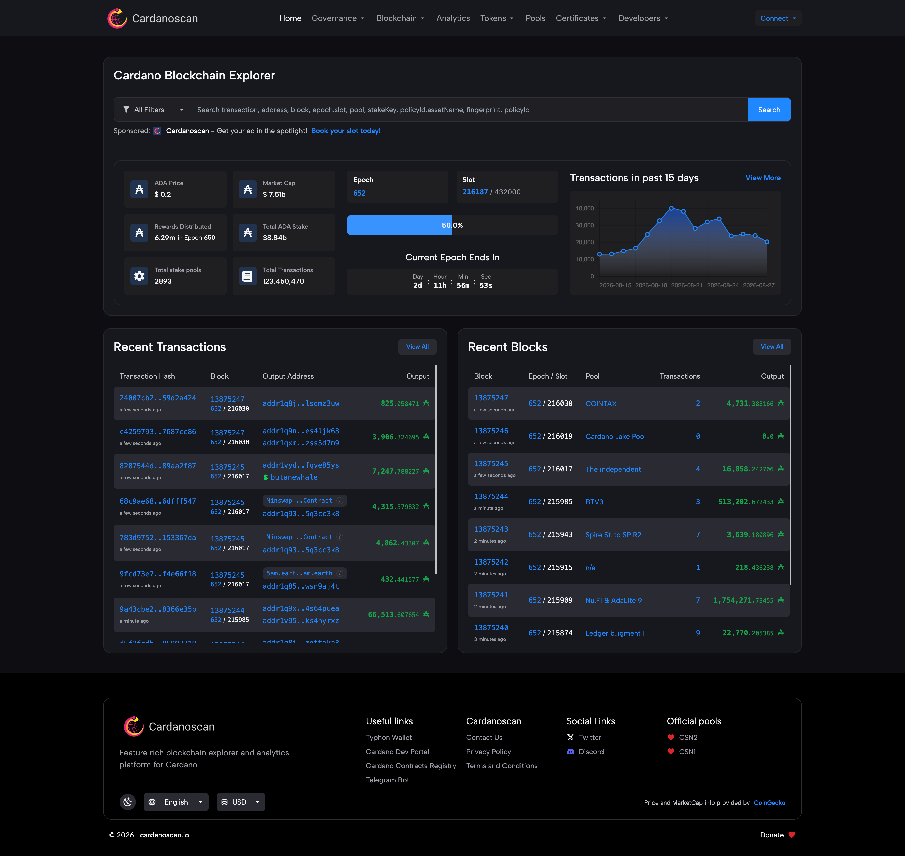

AI Website Maker
Blockchain technology is built around transparency. Every transaction recorded on a public blockchain can potentially be inspected, verified, and analyzed. However, blockchain data is often difficult for ordinary users to understand because it is presented through technical addresses, transaction hashes, blocks, assets, and network information. Blockchain explorers solve this problem by converting complex on-chain activity into an accessible interface.
Cardanoscan is a blockchain explorer designed for the Cardano ecosystem. It allows users to investigate transactions, addresses, blocks, tokens, stake pools, epochs, and other forms of Cardano network activity. For investors, developers, researchers, and everyday users, an explorer such as Cardanoscan can be an important tool for understanding what is happening on the network.
Cardano has developed into a broad blockchain ecosystem supporting smart contracts, decentralized applications, native assets, staking, and decentralized finance. As activity grows, tools that make blockchain data easier to inspect become increasingly useful.
This article explores Cardanoscan, its major features, how it works, and how users can use it to investigate transactions, wallets, native assets, staking activity, and Cardano network statistics.
What Is Cardanoscan?
Cardanoscan is a blockchain explorer for the Cardano network. Its primary purpose is to provide users with a searchable interface for publicly available blockchain information.
Instead of interacting directly with technical blockchain infrastructure, users can enter information such as a wallet address or transaction hash into the explorer and receive an organized view of the corresponding data.
A blockchain explorer can be compared to a search engine for blockchain activity.
For example, if someone sends ADA to another wallet, the transaction generates a unique transaction hash. By entering that hash into Cardanoscan, users can investigate information associated with the transaction.
Depending on the type of data being viewed, users may be able to examine:
Transaction status
Transaction fees
Block information
Wallet addresses
ADA balances
Native tokens
Staking information
Stake pools
Epoch information
On-chain activity
Understanding the Cardano Blockchain
To understand Cardanoscan, it helps to understand Cardano itself.
Cardano is a proof-of-stake blockchain designed to support decentralized applications, smart contracts, digital assets, and financial services.
Its native cryptocurrency is ADA.
Unlike traditional databases controlled by a single organization, Cardano uses a distributed network of participants to maintain its blockchain.
Transactions are grouped into blocks and recorded permanently on the network.
Cardanoscan provides an interface through which users can inspect this information without needing to operate their own blockchain node or understand every technical detail of Cardano's underlying architecture.
Searching for Transactions
One of the most common reasons people use Cardanoscan is to check a transaction.
When cryptocurrency is transferred, users can obtain a transaction hash. This hash acts as a unique identifier for the transaction.
By entering it into Cardanoscan, users can inspect relevant details.
These can include:
Sending address
Receiving address
Amount transferred
Transaction fee
Block number
Time-related information
Transaction status
Assets included in the transaction
This feature can be particularly useful when someone wants to confirm whether a transfer has been successfully recorded on the Cardano blockchain.
For example, if a user sends ADA from one wallet to another and wants to verify the transaction independently, the transaction hash can be searched through the explorer.
Exploring Wallet Addresses
Cardanoscan also allows users to investigate blockchain addresses.
A Cardano address is a unique identifier associated with a wallet or blockchain account.
When an address is searched, users can potentially see publicly available information such as its transaction history, ADA balance, token holdings, and staking-related information.
This demonstrates one of the fundamental characteristics of public blockchains: activity is transparent.
However, blockchain addresses do not necessarily reveal the real-world identity of the person controlling them.
An address is a blockchain identifier, not automatically a person's name.
Checking ADA Balances
ADA holders can use Cardanoscan to inspect the blockchain balance associated with an address.
This can be useful when a wallet application is temporarily unavailable or when users want an independent way to verify their holdings.
Blockchain explorers are particularly useful for separating wallet-interface information from the underlying network data.
If a wallet displays a certain balance, users can use an explorer to cross-check the blockchain record.
The displayed balance may also include other tokens or staking-related information depending on the address.
Native Assets on Cardano
One of Cardano's important characteristics is its support for native assets.
These assets can exist directly on the Cardano blockchain rather than requiring every token to be implemented as a separate smart contract in the same way some other blockchain ecosystems handle tokens.
Cardanoscan can help users investigate Cardano-based native assets.
Users can search for asset information and examine relevant blockchain activity.
This is particularly useful because Cardano supports a large number of tokens and digital assets created by different projects.
When researching an unfamiliar token, users should carefully verify its asset information and associated policy details.
Simply having a token listed on a blockchain explorer does not mean that the project behind it is legitimate or valuable.
Token Policy IDs
Cardano native assets are associated with policy identifiers.
A policy ID is an important piece of information for distinguishing one asset from another.
This is useful because different projects can potentially use similar names or symbols.
For example, two tokens might both use a similar ticker, but their underlying blockchain identifiers can be different.
Researchers should therefore rely on verified policy information rather than token names alone.
Cardanoscan can help users inspect these identifiers and related asset information.
NFTs and Digital Assets
Cardano has also developed an NFT ecosystem.
Non-fungible tokens are unique blockchain-based assets that can represent digital artwork, collectibles, gaming items, memberships, and other forms of digital ownership.
Blockchain explorers can provide useful information about NFTs and their underlying on-chain records.
Instead of relying only on a marketplace description, users can investigate the blockchain data associated with an asset.
This can help users understand how an NFT was created, where it has moved, and which policy or asset identifiers are associated with it.
Staking Information
Staking is one of the most important features of the Cardano ecosystem.
Cardano uses a proof-of-stake consensus model in which stake pools participate in maintaining the network.
ADA holders can delegate their stake to stake pools.
Delegation allows users to contribute their stake toward a pool without necessarily giving up ownership of their ADA.
Cardanoscan provides information about stake pools and staking activity, making it useful for users researching the Cardano staking ecosystem.
Users can examine information associated with individual pools and compare their blockchain activity.
Stake Pools
Stake pools are essential components of Cardano's proof-of-stake system.
A stake pool is operated by a participant or organization that helps produce blocks and maintain the network.
ADA holders can delegate to these pools.
When evaluating a pool, users may consider factors such as:
Pool performance
Active stake
Fees
Block production
Saturation
Operator information
Cardanoscan can provide useful on-chain information for this research.
However, historical performance does not guarantee future rewards.
Epochs on Cardano
Cardano organizes network activity into periods known as epochs.
Epochs provide a structured way of measuring network activity and staking-related processes.
For users interested in staking, understanding epochs can be helpful because reward calculations and delegation-related processes are connected to Cardano's network cycles.
Cardanoscan provides information about current and historical epochs, helping users understand where the network is within its operational timeline.
Blocks and Network Activity
Blockchain explorers also allow users to investigate individual blocks.
A block contains a collection of transactions that have been recorded on the blockchain.
By examining blocks, users can gain insight into network activity.
Information may include:
Block number
Slot information
Block producer
Transaction count
Block-related metadata
For developers and researchers, this information can be especially valuable when analyzing blockchain behavior.
Cardanoscan for Developers
Developers can use blockchain explorers as research and debugging tools.
When developing a Cardano application, developers may need to investigate whether a transaction was submitted correctly or determine how a particular address interacted with the network.
An explorer can make this process easier.
Developers may use it to:
Verify transactions
Inspect addresses
Check token information
Analyze blocks
Investigate staking activity
Examine on-chain behavior
For users building decentralized applications, blockchain explorers are often an important part of the development workflow.
Cardanoscan for Investors
Investors can also benefit from blockchain explorers.
Rather than relying entirely on social-media claims or project websites, investors can inspect actual blockchain activity.
For example, someone researching a Cardano token could examine its issuance information, transaction activity, holders, and movement across addresses.
This does not guarantee that an investment is safe, but it can provide additional information for research.
On-chain data can sometimes reveal activity that is not immediately visible through traditional financial websites.
Transparency and Verification
One of the biggest benefits of Cardanoscan is transparency.
Blockchain technology allows users to independently inspect publicly recorded information.
This creates opportunities for verification.
For example, if a project claims that a certain amount of tokens exists, users may be able to inspect relevant blockchain data.
If a user claims that a transaction was sent, the transaction hash can potentially be checked independently.
This ability to verify information is one of the major differences between public blockchains and traditional financial systems.
Security and Privacy Considerations
Although blockchain explorers provide transparency, users should understand that blockchain activity is public.
If an address becomes connected to a real-world identity, its transaction history may become easier to associate with that individual or organization.
Users should therefore avoid publicly sharing unnecessary wallet information.
It is also important to understand that blockchain explorers are primarily information tools. They do not protect users from scams, malicious tokens, phishing websites, or fraudulent investment projects.
Seeing a transaction on Cardanoscan only confirms that blockchain activity occurred. It does not prove that the person or project behind the transaction is trustworthy.
Benefits of Cardanoscan
Easy Blockchain Exploration
Cardanoscan transforms complex blockchain information into a more accessible interface.
Transaction Verification
Users can independently check transaction information.
Address Analysis
Wallet addresses and their public activity can be researched.
Asset Tracking
Cardano native assets can be investigated using blockchain identifiers.
Staking Research
Users can examine stake pools and staking-related information.
Developer Support
Developers can use on-chain data to investigate transactions and troubleshoot applications.
Transparency
The explorer helps users take advantage of Cardano's publicly verifiable blockchain infrastructure.
Limitations of Blockchain Explorers
Cardanoscan is useful, but it should not be treated as a complete source of truth for every question.
Blockchain data can show what happened on-chain, but it may not explain why an event happened.
For example, an address may receive millions of tokens, but the explorer cannot necessarily tell users whether the transaction represented an investment, payment, internal transfer, or another arrangement.
Similarly, a token's existence on the blockchain does not automatically indicate its legitimacy.
Users should combine on-chain information with project documentation, reputable research, and independent verification.
The Future of Cardano Explorers
As the Cardano ecosystem develops, blockchain explorers are likely to become increasingly sophisticated.
Future explorer tools may provide improved:
Data analytics
Token tracking
DeFi information
NFT analysis
Staking statistics
Developer APIs
Smart-contract monitoring
Portfolio analysis
The growth of decentralized applications will create more types of blockchain data that users need to understand.
Explorers can therefore become increasingly important infrastructure for the Cardano community.
Conclusion
Cardanoscan is an important tool for anyone interested in understanding the Cardano blockchain. By providing an accessible interface for exploring transactions, addresses, blocks, native assets, NFTs, stake pools, and epochs, it makes public blockchain data easier to investigate.
For ordinary users, Cardanoscan can be useful for confirming transactions and checking wallet activity. For investors, it can provide additional on-chain information when researching digital assets. For developers, it can serve as a valuable debugging and research resource.
Its greatest value comes from the transparency of the underlying Cardano blockchain. Instead of requiring users to trust a single centralized database, Cardanoscan allows them to inspect information that has been recorded on a public network.
However, blockchain data should always be interpreted carefully. An explorer can verify on-chain activity, but it cannot determine whether an investment is safe or whether an unknown project is legitimate.
As Cardano continues developing its ecosystem of decentralized applications, digital assets, and financial services, tools such as Cardanoscan will remain valuable for making blockchain activity more understandable, searchable, and verifiable.
AI Website Maker